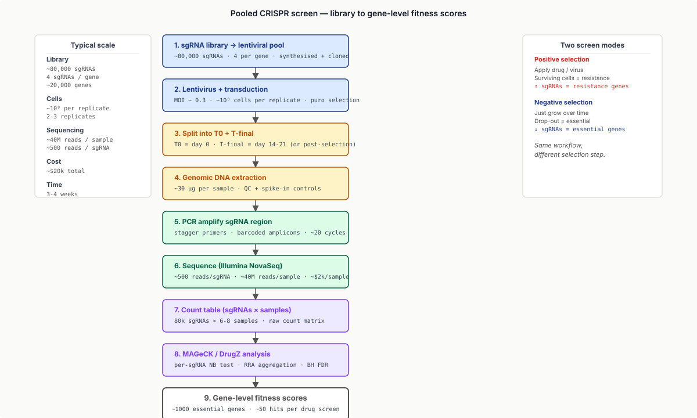
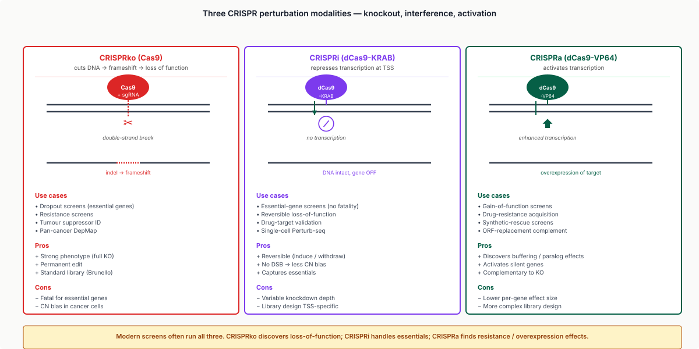
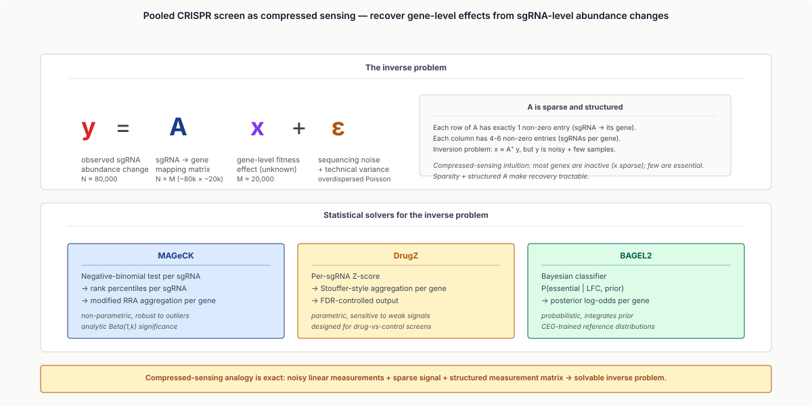
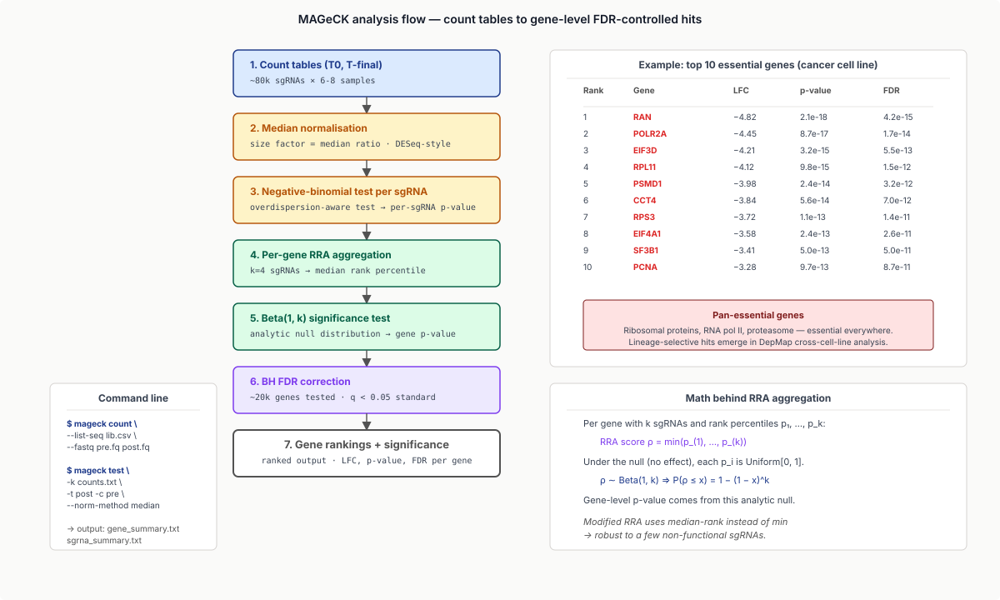
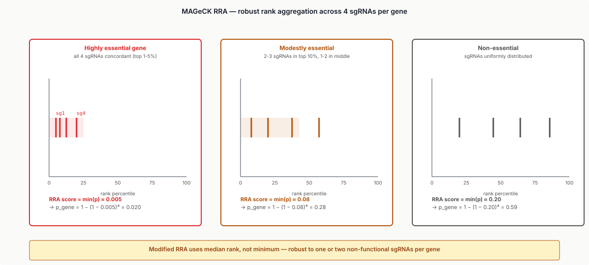
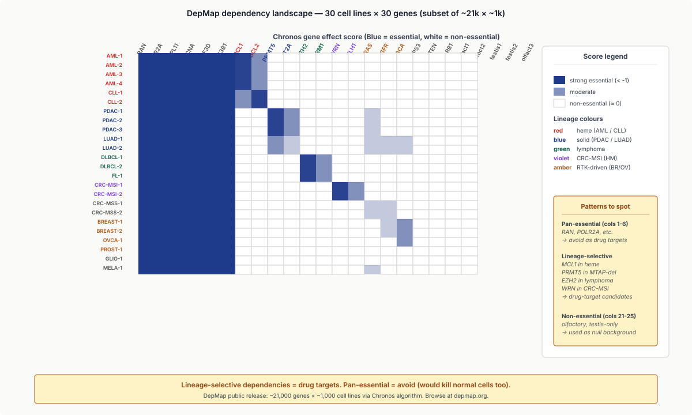
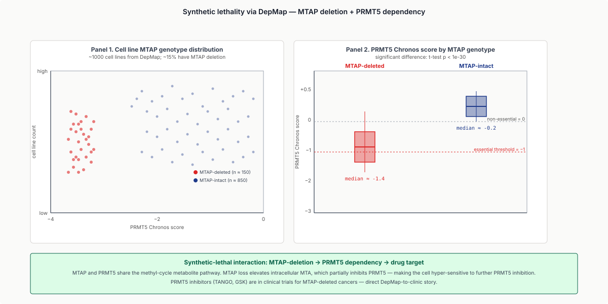
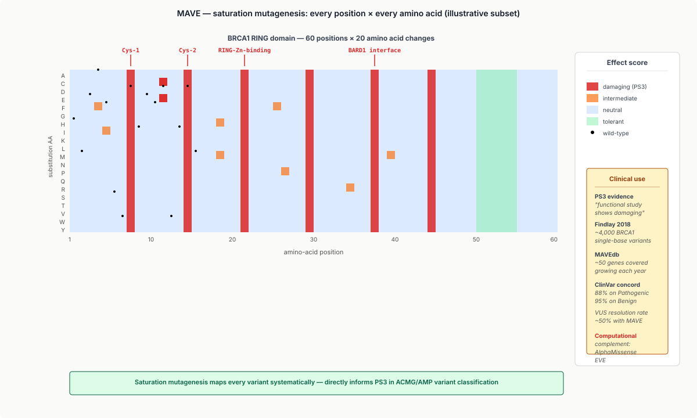
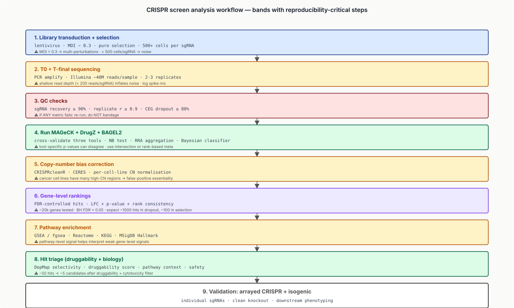

Five moves: make a 10⁵-perturbation library, infect at MOI 0.3, count sgRNAs at T0 and T-final, aggregate sgRNAs to genes, cross-reference DepMap for selectivity.
Learning objectives
- Describe the CRISPR-Cas9 mechanism in one paragraph; explain how it's repurposed for genome-scale functional screens.
- Distinguish library types: CRISPR knockout (CRISPRko, Cas9), CRISPR interference (CRISPRi, dCas9-KRAB), CRISPR activation (CRISPRa, dCas9-VP64), base editors, prime editors.
- Run a pooled-screen analysis end-to-end: from FASTQ → sgRNA counts → fitness scores via MAGeCK / DrugZ.
- Interpret a screen as positive-selection or dropout (negative-selection); compute log fold change of sgRNA abundance and aggregate to gene-level.
- Use the DepMap (Cancer Cell Line Encyclopedia) for cancer-gene-dependency lookup; identify lineage-selective dependencies; prioritise drug targets.
- Apply MAVEs (multiplexed assays of variant effects) and saturation mutagenesis screens for variant interpretation.
- Frame pooled screens as compressed sensing on a perturbation matrix; sgRNA abundance as noisy linear measurement; gene scoring as inverse problem.
Part 1 · 30 min CRISPR for Functional Genomics
1.1 The CRISPR mechanism
CRISPR-Cas9 (Doudna & Charpentier 2012, Zhang 2013) is a programmable nuclease:
- sgRNA (single-guide RNA): ~100 nt, 20 nt of which (the "spacer") is complementary to the target DNA.
- Cas9: a DNA endonuclease that binds the sgRNA and cleaves DNA where the sgRNA finds a match (with a downstream PAM sequence: NGG for SpCas9).
- Result: a double-strand break at the target site → cellular repair (NHEJ usually) → small indels → frameshift → loss-of-function.
For pooled screens, build a library of ~80,000 sgRNAs (4-6 per gene × ~20,000 genes); deliver via lentivirus; each cell gets ~1 sgRNA at a time; selection / dropout reveals which gene knockouts affect fitness.
1.2 The screen designs
Positive-selection screen:
- Apply selection (drug, virus, hostile environment) that kills most cells.
- Surviving cells are enriched for sgRNAs targeting genes whose loss confers resistance.
- Read out: pre-selection vs post-selection sgRNA counts.
- High-fold-change sgRNAs → resistance genes.
- Examples: drug-resistance screens (BCR-ABL + imatinib → identify resistance pathway), viral entry (HIV co-receptor screens), tumour-suppressor identification.
Negative-selection / dropout screen:
- Grow cells over time without selection.
- sgRNAs targeting essential genes → cells with that knockout die / fail to proliferate → sgRNA counts drop.
- Read out: T0 (initial library) vs T-final (after 14-21 days).
- Drop-out sgRNAs → essential genes.
- Examples: cancer-essentiality (DepMap), context-dependent essentiality (essential in cancer cell lines but not normal — drug targets).

1.3 CRISPRi and CRISPRa
For non-cutting screens:
CRISPRi (interference):
- dCas9-KRAB: catalytically-dead Cas9 fused to a KRAB transcriptional repressor.
- Targets transcription start sites of genes; suppresses transcription without permanent DNA edits.
- Reversible (vs CRISPRko which permanently edits).
- Better for essential genes (don't kill cells with single-cell-fatal knockouts).
CRISPRa (activation):
- dCas9-VP64 (or SunTag, SAM): transcriptional activator.
- Drives expression of normally-silent genes.
- Used for gain-of-function screens (overexpression confers resistance to drug?).
CRISPRko vs CRISPRi vs CRISPRa give complementary information: knockout (gene's removed), interference (gene's reduced), activation (gene's amplified). Modern screens often run all three.

1.4 Base editors and prime editors
Base editors (Komor 2016): create specific point mutations without DSBs. Useful for:
- Saturation mutagenesis at a specific gene (every codon changed).
- MAVEs at single-base resolution.
- Discovery of disease-causing variants.
Prime editors (Anzalone 2019): even more flexible — write arbitrary edits. Slower per cell but precise.
1.5 Pooled vs arrayed screens
- Pooled: all sgRNAs in one tube; phenotype-cell linkage by sgRNA-amplicon sequencing. ~$20k for genome-scale screen.
- Arrayed: each sgRNA in a separate well; per-well phenotyping (e.g., imaging, RNA-seq). 10–100× more expensive but allows complex phenotypes.
Most discovery screens are pooled; arrayed screens dominate for downstream characterisation.
Part 2 · 25 min Library Design and Quality
2.1 Library catalogues
Standard human CRISPRko libraries:
- Brunello (Doench 2016): 76k sgRNAs, 4 per gene, optimised activity scores.
- GeCKO v2 (Sanjana 2014): legacy ~120k library.
- TKOv3 (Mair 2019): 70k sgRNAs, optimised for dropout screens, anti-correlation control.
- CRISPick library generator: design custom libraries.
For CRISPRi: Dolcetto or Horlbeck library.
![Two-panel library quality figure. Top panel: distribution of on-target activity scores across libraries (Brunello, TKOv3, GeCKO v2). Modern libraries (Brunello, TKOv3) skew right with high activity peaks; older GeCKO v2 has a broader, lower-peaked distribution. Bottom panel: distribution of predicted off-target counts. Modern libraries skew left (few off-targets); older legacy library has a longer right tail. Side panel: number of sgRNAs per gene by library — typically 4 (Brunello) to 6 (legacy).](../diagrams/lecture-24/02-library-quality.svg)
2.2 sgRNA scoring
Not all sgRNAs work equally. Two scoring axes:
On-target activity — which sgRNAs cut efficiently?
- Doench Rule Set 2 (Doench 2016): linear regression on sgRNA features → activity score.
- Azimuth 2.0: deep-learning extension.
- High-activity sgRNAs reduce noise in screens.
Off-target effects — which sgRNAs have unintended targets?
- CFD score: per-position mismatch tolerance.
- MIT score: alternative.
- High-specificity sgRNAs reduce false positives.
Library design balances activity (high) and specificity (high) against catalogue coverage (4-6 sgRNAs per gene).
![Two-panel sgRNA scoring figure. Top panel: on-target — sgRNA features (PAM context, GC content, position-specific nucleotides) → Doench Rule Set 2 score. Histogram of typical-library scores (Brunello ranges 0.4 to 0.95, peak around 0.65). Bottom panel: off-target — PAM-distal mismatches → CFD score. Heat map of mismatch tolerance per position showing seed region (positions 1-10 from PAM) intolerant, distal positions (11-20) more tolerant. Side annotation: 'high-quality sgRNA = high on-target + low off-target. Library design balances both.'](../diagrams/lecture-24/08-sgrna-scoring.svg)
2.3 Multiplicity of infection
MOI = average number of viral particles per cell. For a clean screen, MOI ~ 0.3 → ~70% of cells get exactly one sgRNA, ~5% get two or more.
- Higher MOI → many cells get multiple sgRNAs → confounded phenotypes.
- Lower MOI → fewer infected cells → less data.
The MOI = 0.3 sweet spot is standard.
2.4 Coverage and replicates
- Cell coverage: ~500 cells per sgRNA at infection (each sgRNA needs enough founders).
- Read coverage: ~500 reads per sgRNA at sequencing.
- Biological replicates: typically 2-3 independent infections.
Genome-scale screens require ~10⁸ cells per replicate (75k sgRNAs × 500 cells × MOI 0.3 / 0.3).
2.5 The deep dive

Part 3 · 40 min Screen Analysis with MAGeCK
3.1 The data
Output of a screen: count tables.
- Rows: sgRNAs.
- Columns: samples (typically pre-selection + post-selection × 2-3 replicates).
- Cells: sgRNA read counts.
For a typical screen, ~80k sgRNAs × 6-8 samples → ~600k cells in the matrix. Each sgRNA has 4-6 instances per gene, so the underlying gene-level matrix is ~20k × 6-8.
3.2 sgRNA-level fold change
Per-sgRNA log fold change (LFC):
$$\text{LFC}_{i} = \log_2 \frac{\text{count post}_i + 1}{\text{count pre}_i + 1}$$
- Negative LFC: sgRNA dropped out → its target gene is essential.
- Positive LFC: sgRNA enriched → its target gene's loss provides selection advantage.
Normalisation: median normalisation, or DESeq-style size factors (count data, after all).
3.3 Gene-level aggregation
Per gene: combine 4-6 sgRNA LFCs into one gene-level score + p-value.
MAGeCK (Li 2014, 2015) — the standard:
- Computes per-sgRNA p-values (negative-binomial test on counts).
- Aggregates per-gene via modified RRA (robust rank aggregation): median-rank-based test that's robust to a few non-functional sgRNAs.
- Output: per-gene log fold change, p-value, FDR.
DrugZ (Wang 2017, 2018): Z-score-based; designed for drug-vs-control resistance/sensitisation screens.
BAGEL2 (Kim 2019): Bayesian classifier for essentiality. Probabilistic essentiality prediction.
For a typical screen: run all three; cross-validate.


3.4 Quality control
Critical QC metrics:
- sgRNA recovery: fraction of library sgRNAs detected with ≥ 5 reads. Target ≥ 90%.
- Replicate concordance: Pearson correlation between replicates at sgRNA level. Target ≥ 0.9.
- Essential gene recovery: fraction of CEGs (core essential genes) showing significant dropout. Target ≥ 80%.
- Non-essential gene null distribution: proper centring at LFC = 0 and adequate tail behaviour.
If QC fails, the analysis is uninterpretable. Re-run, don't bandage.
3.5 Worked example
A classic dropout screen on cancer cell lines:
- Library: TKOv3, ~70k sgRNAs.
- 6 cell lines, 2 replicates each, T0 + T21 days.
- MAGeCK output: ~1,000 essential genes per cell line, with cell-line-specific subsets ("contextual essentialities").
3.6 Modern variants
- MAUDE (Doench 2018): integrates with the Brunello library design.
- MELANIE / CRISPRcleanR: corrections for copy-number-variation effects (high-CN regions can fail screens because Cas9 cuts every copy → huge fitness penalty unrelated to gene function).
- CASA: cell-line-aware model (handles polymorphic libraries).
Part 4 · 30 min DepMap and Cancer Dependencies
4.1 The DepMap project
Cancer Dependency Map (Broad / Sanger collaboration): genome-scale CRISPR knockout screens in ~1,000+ cancer cell lines spanning ~30 cancer types.
Public release (depmap.org): per-gene fitness score (CERES, then Chronos) per cell line, plus matched omics (RNA-seq, methylation, mutations, copy number).
This is the Atlas of Druggable Cancer Dependencies — for any candidate drug target, you can ask: "in which cancer cell lines is this gene essential?"
4.2 The Chronos algorithm
CERES (Meyers 2017): the original DepMap scoring algorithm; corrects for copy-number bias.
Chronos (Dempster 2021): the current scoring algorithm:
- Models per-cell-line, per-sgRNA log fold change.
- Corrects for sgRNA-level activity, copy-number effect, library-batch effect.
- Output: per-gene "gene effect" score for each cell line.
- Score < -1: strong essential. Score = 0: non-essential.
The DepMap ~21,000 genes × ~1,000 cell lines is the result.

4.3 Lineage-selective dependencies
For drug-target prioritisation, the key signal is lineage-selective essentiality:
- Gene is essential in some cancers but not others.
- → Targeting it could kill specific cancer types without harming normal cells.
Major examples found via DepMap:
- MCL1 in haematological cancers vs solid tumours.
- MTAP-deletion synthetic lethality: MTAP loss in 15% of cancers → PRMT5 dependency. Drug development target.
- EZH2 in lymphomas with EZH2 mutations.
- WRN helicase in MSI-high cancers (synthetic lethal).
The 2024 frontier: ~50 lineage-selective dependencies identified; ~10 in clinical trials; ~3 in advanced clinical use.
4.4 Drug-screen integration
DepMap also contains drug-screen data (PRISM, GDSC, CTRPv2): IC50 / AUC values for ~1,000 drugs across ~500 cell lines.
Cross-referencing CRISPR + drug screens:
- Drug X kills cell lines where gene Y knockout also kills.
- → Drug X likely targets gene Y or its pathway.
- Used to deduce mechanism of action for novel drugs.
4.5 Synthetic lethality
Synthetic lethality: gene A is non-essential, gene B is non-essential; but A + B knockout is lethal. For cancer therapy: if cancer has loss of A (driver mutation), targeting B becomes a cancer-selective killer.
Discovery pipeline:
- Identify cancer-specific gene losses (driver deletions).
- Run CRISPR screens in cancer cell lines vs normal.
- Look for cancer-selective dependencies → synthetic-lethal candidates.
PARP inhibitors in BRCA1/2-deficient cancers are the canonical clinical example.

Part 5 · 25 min MAVEs and Variant Effect Maps
5.1 The MAVE concept
MAVEs (Multiplexed Assays of Variant Effects): experimental measurements of all possible variants in a region. Most commonly: deep mutational scanning (DMS) on a protein.
- Generate library of ~all single-amino-acid changes (~20× protein length).
- Couple to a phenotypic assay (binding, growth, expression).
- Count library members before vs after selection.
- Score each variant.
Result: a per-position-per-AA fitness map for a protein region.
5.2 Saturation mutagenesis with base editors
Base editors (Cas9-cytosine-deaminase) introduce point mutations at high efficiency without DSBs.
Workflow:
- Library of ~all possible base-edit sgRNAs targeting a gene.
- Each edit produces a specific point mutation.
- Pooled introduction; phenotype selection; sequencing of edited reads.
- Score each variant.
Example: BRCA1 saturation mutagenesis (Findlay 2018): tested ~4,000 BRCA1 single-base variants for HDR function → published variant-effect map → directly informs ACMG/AMP variant classification.

5.3 Variant effect maps in clinical genomics
The bridge to clinical genomics:
- ACMG/AMP PS3 (functional studies show damaging effect): MAVEs provide systematic functional data.
- For genes with published MAVEs (BRCA1, MSH2, TP53, etc.), variant interpretation gets a quantitative basis.
- The MAVEdb repository aggregates published MAVEs across ~50 genes.
5.4 Computational complement: deep-learning MAVE
For genes without experimental MAVEs:
- AlphaMissense: deep-learning predictor trained partly on MAVE data.
- EVE (Frazer 2021): unsupervised deep-learning model that learns variant effects from sequence alone.
- Both feed PP3/BP4 evidence in clinical interpretation.
5.5 The 2024 frontier
- Combinatorial MAVEs: paired mutations (epistasis maps).
- Single-cell MAVEs: link variant to phenotype at single-cell resolution.
- AI-MAVE integration: train deep models on existing MAVEs + apply to genes without experimental data.
Part 6 · 25 min Tools, Pitfalls, and Workflows
6.1 Standard 2024 stack
For a typical CRISPR-screen analysis:
- MAGeCK (Python/R): canonical tool.
- DrugZ (R): drug screens.
- BAGEL2 (R): essentiality classifier.
- CRISPRcleanR (R): CN bias correction.
- MELANIE / CASA: advanced library-aware tools.
For visualisation: R/Bioconductor, MAGeCKFlute, or in-house Python/Plotly.

6.2 Pitfalls
Library:
- Use a recent, well-validated library (Brunello, TKOv3, Dolcetto). Legacy libraries have many low-activity sgRNAs.
- 4-6 sgRNAs/gene minimum; fewer means high noise.
Experimental:
- MOI control: > 0.3 → confounded multi-perturbations; enforce strict MOI < 0.3.
- Cell coverage: < 500/sgRNA → noisy results.
- Replicate concordance: < 0.9 means major batch effect; investigate before interpreting.
Bioinformatics:
- Copy-number-variation bias: cancer cell lines often have high CN regions; sgRNAs in those regions cut more → inflated fitness penalty unrelated to gene function. CRISPRcleanR or CERES handles this.
- Library DNA contamination: library plasmid DNA contaminates the screen; hash-check the count distribution.
- Outlier essential genes: a few highly-essential genes always dominate; trim or rank-aggregate.
Statistical:
- Multiple testing: ~20k genes tested; FDR control essential.
- Power: at typical signal sizes, n=2 replicates is barely enough; n=3 is standard; n=4 desirable for weak phenotypes.
6.3 Reproducibility
CRISPR screens have notably better reproducibility than microbiome (~80% replication), driven by:
- Standardised libraries.
- Cell-line uniformity (vs human-cohort heterogeneity).
- Fewer biological covariates (lab-adapted cell lines vs human variation).
But cell-line-specific results don't always generalise to primary tissue — keep the cell-line vs tissue distinction in mind.
6.4 The 2024 frontier
- In vivo CRISPR screens: pooled screens in transplanted tumours / animal models.
- Single-cell CRISPR screens: Perturb-seq, ECCITE-seq → per-cell phenotype + perturbation linkage.
- Combinatorial perturbations: paired sgRNAs → epistasis screens.
- CRISPR-driven RNA targeting: Cas13a; targeting RNA rather than DNA.
Part 7 · 15 min From Screen to Therapy
7.1 The discovery → drug pipeline
A typical drug-discovery program informed by CRISPR screens:
- Disease model: cancer cell line / iPSC / patient-derived organoid.
- CRISPR screen: identify essential genes / pathway dependencies.
- Hit triage: filter for druggable targets (small-molecule-binding pockets, surface antigens).
- Validation: arrayed CRISPR knockout, isogenic-pair experiments.
- Drug discovery: virtual screening, hit-to-lead, medicinal chemistry.
- Clinical trials: based on validated target.
The 2010s saw ~5 clinical-grade targets emerge from this pipeline; 2020s expects 10× more.
![Pipeline diagram from CRISPR screen to clinical drug. 1. CRISPR screen identifies dependency. 2. Hit validation (arrayed knockout, isogenic). 3. Druggability assessment (small-molecule pocket, surface accessible). 4. Hit-to-lead chemistry. 5. Pre-clinical validation (xenograft). 6. Phase I clinical trial (safety). 7. Phase II clinical trial (efficacy). 8. Phase III + FDA approval. Time annotation: ~7-10 years from screen to FDA. Side panel: example real timelines (PARP inhibitors, PRMT5 inhibitors).](../diagrams/lecture-24/12-screen-to-drug.svg)
7.2 Pharma adoption
CRISPR screens are now standard in:
- Roche / Genentech / Pfizer / Novartis internal target ID.
- Recursion / Tempus / In8 / Nimbus: AI-driven CRISPR-screen-based drug discovery.
- Vertex Pharmaceuticals: pioneered MAVE-driven gene-therapy product (Casgevy, FDA-approved 2023, sickle cell disease).
7.3 Cancer therapy
In oncology, DepMap-driven targets in clinical development:
- PRMT5 inhibitors: MTAP-deleted cancers (TANGO, GSK).
- WRN inhibitors: MSI-high cancers.
- PARP inhibitors: BRCA-deficient cancers.
- MCL1 inhibitors: hematologic malignancies.
Each emerged from CRISPR-screen evidence + structural biology + clinical translation.
7.4 Beyond cancer
- Anti-virals: CRISPR screens identify host factors required for viral replication. SARS-CoV-2 entry-factor screens (Daniloski 2021) found ACE2 + furin + cathepsin L.
- Inflammation: identify cytokine-pathway nodes for autoimmune drug development.
- Neurodegeneration: iPSC-derived neuron screens for Alzheimer's, Parkinson's targets.
Wrap-up
What you should take away
- CRISPR-Cas9 + lentiviral library = genome-scale functional screen. Knockout, interference, activation each give distinct information.
- Pooled screens are compressed sensing on a perturbation matrix; gene-level scoring is rank aggregation across replicate sgRNAs.
- MAGeCK + DrugZ + BAGEL2 are the analytical workhorses. Critical QC: sgRNA recovery, replicate concordance, CEG dropout.
- DepMap is the cancer-dependency atlas: ~1,000 cell lines × ~21k genes. Lineage-selective dependencies → drug targets.
- MAVEs (saturation mutagenesis) provide systematic variant-effect data → directly informs clinical variant interpretation.
- CRISPR screens drive modern target discovery: most emerging cancer drugs trace to CRISPR + structure + clinical translation.
- EE framings: pooled screen as compressed sensing; sgRNA abundance as noisy linear measurement; gene scoring as inverse problem; rank aggregation as modified Beta distribution test.
Next lecture
Data engineering for bioinformatics. The reproducibility infrastructure you'll learn there is what makes large-scale CRISPR + DepMap analysis possible.
Homework
- Download a public CRISPR-screen dataset (e.g., DepMap Public 23Q4). Run MAGeCK on raw counts; report top 10 essential genes.
- Compare the same screen analysed by MAGeCK vs DrugZ vs BAGEL2. Where do they agree? Where do they differ?
- Pick a cancer type from DepMap; identify the top 5 lineage-selective essential genes. Cross-reference with PRISM drug-screen data; identify drugs targeting these genes.
- From the BRCA1 MAVE (Findlay 2018), tabulate variant effects for the top 100 ClinVar Pathogenic variants. Compute concordance with experimental MAVE scores. Discuss disagreements.
- Design a CRISPRko library targeting a 50-gene custom set. Pick optimal sgRNAs using CRISPick / Doench Rule Set 2. Report on-target activity and off-target predicted scores.
Recommended reading
- Doudna, J. A., & Charpentier, E. (2014). The new frontier of genome engineering with CRISPR-Cas9. Science 346, 1258096.
- Doench, J. G., et al. (2016). Optimized sgRNA design to maximize activity and minimize off-target effects of CRISPR-Cas9. Nature Biotechnology 34, 184–191.
- Sanjana, N. E., et al. (2014). Improved vectors and genome-wide libraries for CRISPR screening. Nature Methods 11, 783–784.
- Mair, B., et al. (2019). Essential gene profiles for human pluripotent stem cells identify uncharacterized genes. Cell Reports 27, 599–615.e4.
- Li, W., et al. (2014). MAGeCK enables robust identification of essential genes from CRISPR/Cas9 screens. Genome Biology 15, 554.
- Wang, B., et al. (2017). Robustly improved CRISPR screening data filtering. Genome Biology 18, 165.
- Meyers, R. M., et al. (2017). Computational correction of CN bias in CRISPR screens. Nature Genetics 49, 1779–1784.
- Dempster, J. M., et al. (2021). Chronos: a CRISPR cell fitness time-series model. Genome Biology 22, 343.
- Findlay, G. M., et al. (2018). Accurate classification of BRCA1 variants with saturation genome editing. Nature 562, 217–222.
- Tsherniak, A., et al. (2017). Defining a Cancer Dependency Map. Cell 170, 564–576.e16.
- DepMap: depmap.org
- MAGeCK: sourceforge.net/p/mageck
- MAVEdb: mavedb.org
- CRISPick: broadinstitute.org/gpp
Appendix — timing summary
| Block | Time | Cumulative |
|---|---|---|
| Part 1 — CRISPR for Functional Genomics | 30 min | 0:30 |
| Part 2 — Library Design and Quality | 25 min | 0:55 |
| Part 3 — Screen Analysis with MAGeCK | 40 min | 1:35 |
| Part 4 — DepMap and Cancer Dependencies | 30 min | 2:05 |
| Part 5 — MAVEs and Variant Effect Maps | 25 min | 2:30 |
| Part 6 — Tools, Pitfalls, and Workflows | 25 min | 2:55 |
| Part 7 — From Screen to Therapy | 15 min | 3:10 |
| Wrap-up | 10 min | 3:20 |
Total: ~3h 20min of content.